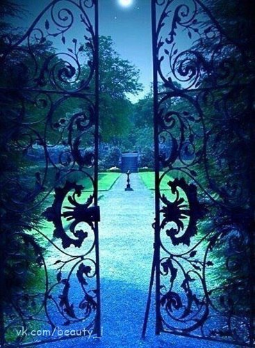

27 Друг из мира снов
Не бойтесь того, что ваша жизнь должна окончиться, бойтесь того, что она так и не начнется ( Д.Ньюмен )
Для меня мир снов - это настоящая параллельная жизнь. Чем больше я чувствую реальность сна, тем менее реальной кажется явь.
С раннего детства во снах меня навещали существа. Одно из них появлялось с завидным постоянством. Приходит и смотрит. Я прячусь в шкаф - оно меня находит. И смотрит всё тем же странным взглядом, частенькое наклонив голову на бок. Некоторые существа меня обучали: Елена, которую в самом начале нашей встречи назвали "Учителем" и другое существо - М, как я его называла.
С М я знакома с раннего детства. Когда я была маленькая, он учил меня летать и выполнять разные манипуляции в мире снов. Сколько же я падала, ошибалась, перед тем, как научиться! В одном из снов я летала и вдруг осознала - сколько же людей ходит по земле! Ведь и они тоже могут научиться летать. Я спустилась и начала всем показывать - как же это здорово, ощущать полет. Сначала с недоверием, потом с интересом, а потом с явным желанием повторить мой опыт. Я взяла их за руку, взлетела и мы полетели вереницей, словно воздушный змей. Внезапно появился М, резко перехватил у меня людей, а меня изо всех сил кинул на землю и ударил по щеке.
Я заплакала в растерянности. Было больно и не понятно: за что? Я же хотела всем показать вкус свободы, красоту полёта. Неужели это было только для меня?
М объяснил: как можно вести за собой, если сама не знаешь, куда ты направляешься? А если бы ты нечаянно отпустила руку, то они бы просто упали и разбились. Ты это понимаешь?! Ты летела в пустоту, одна. А что там дальше - за облаками - тебе известно? Вдруг там общая погибель? Ты берешь на себя ответственность за чужие жизни!
Несмотря на то, что М мог быть довольно строгим, у меня было к нему особенно теплое отношение. В детстве я даже была в него влюблена - моя первая детская влюбленность. Это ничуть не мешало мне у него учиться - напротив, это повышало доверие. Мне было очень жаль, что он так редко ко мне приходит. Потом я повзрослела и перестала в него верить, как в живое существо. Тем не менее, во сне мы целовались. При этом я ощущала такой фантастический поток света и любви, который никогда не чувствовала ни с кем из живых людей. И каждый раз я надеялась - вот теперь, наконец-то, я его нашла и мы будем вместе. Он обещал мне, что никогда меня не оставит. Однако, после пробуждения, я осознавала, что одна и всё возвращалось на круги своя. А так хотелось ласки... Но разве можно обижаться на сон? Как жаль, что нельзя ничего вынести из сна! Поэтому позже я запретила себе искать ночью встреч с ним - уж слишком больно потом просыпаться. Невероятное чувство любви, а после пробуждения - разочарование...
Периодически в осознанных снах происходит странное явление: я взлетаю и меня выбрасывает к облакам. Пытаюсь преземлиться и что-то мешает, словно земля меня отталкивает... А за облаками - темно... там новый мир, куда страшно идти.
Как хочется, чтобы рядом кто-то был и направлял - мудрый и любящий. Но я одна. Иду на свой страх и риск. Я иду по узкой дороге между двух пропастей, между сциллой и харибдой. Стараюсь балансировать и не сорваться, поскольку сорваться в эту пропать означает сойти с ума. Или проснуться. Я не знаю. Я чувствую, что передо мной дверь и я стараюсь в нее заглянуть, но то, что за дверью предательски ускользает: "Ключик-то остался на столе"
Я хочу добраться до смысла. Я чувствую растерянность. Я не знаю, что в реальном мире подлинно, а что нет. "Реальная" жизнь не подсказала мне определяющего смысла
Хотя теперь, мне кажется, что люди сочинили эту реальную жизнь, все вместе смотрят на жизнь сквозь какую то темную матовую призму. А повернуть жизнь так легко!
Все повязаны цепями, маршируют в галерее призраков. Как в эпизоде с мясорубкой в фильме "The Wall"
Пора проснуться.
Я чувствую сильнее и сильнее свою связь с "присутствием" чего-то.
Мне становится сложно думать о чем-то плохом, словно оно уже контролирует мои мысли.
Понимаю, как сильно мы зависим от обычных внешних раздражителей. От нашего самочувствия. От времени суток, в конце концов. Как же сложно освободиться от стереотипов и концепций. Как же мы несвободны
На внутреннем уровне - уровне ощущений - живут дети, но постепенно общество учит их заменять ощущения оценками, и когда дети становятся взрослыми, ощущение жизни перемещается из сердца в голову.
Бывают такие моменты, когда все стройные концепции разваливаются как карточный домик... В такие моменты я закрываю глаза и слушаю тишину.
После тишины, самым точным в выражении невыразимого, является музыка. Олдос Хаксли
